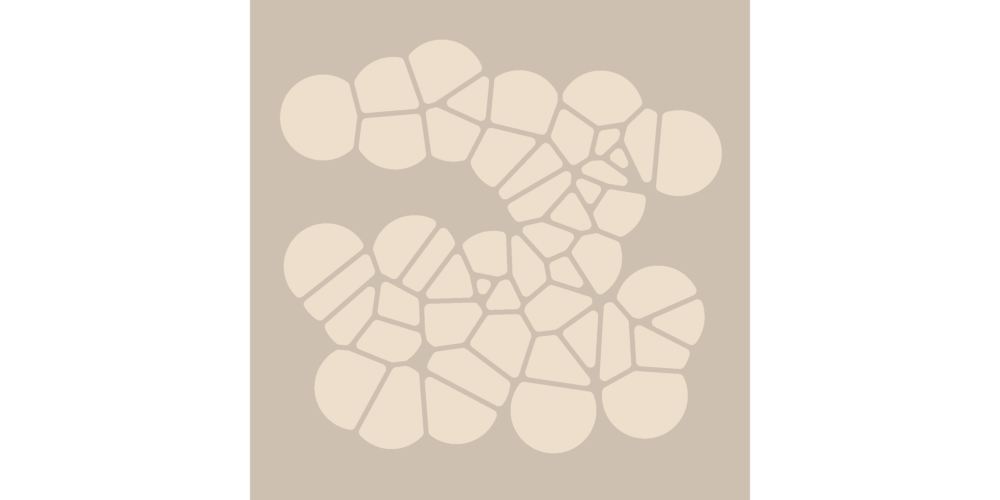

The goal of voronoise is to make pretty pictures. It is a very minor tweak on the voronoi tesselations provided by the ggforce package. You can install the development (only) version of voronoise from GitHub with:
remotes::install_github("djnavarro/voronoise")
library(voronoise) #> Loading required package: ggplot2 #> Loading required package: ggforce set.seed(1) shades <- function(n) { sample(colours(), size = n, replace = TRUE) } dat <- data.frame( x = runif(n = 50, min = .1, max = .9), y = runif(n = 50, min = .1, max = .9), cols_b = "antiquewhite2", cols_f = shades(50) ) ggplot(dat, aes(x, y, group = 1)) + geom_voronoi_tile( mapping = aes(fill = cols_b), show.legend = FALSE, max.radius = .1, radius = .01, expand = -.005 ) + geom_voronoi_tile( mapping = aes(fill = cols_f), stat = "voronoise_tile", show.legend = FALSE, max.radius = .1, radius = .01, expand = -.005 ) + scale_fill_identity() + theme_mono("antiquewhite3") + coord_square()
